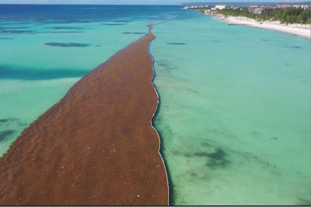
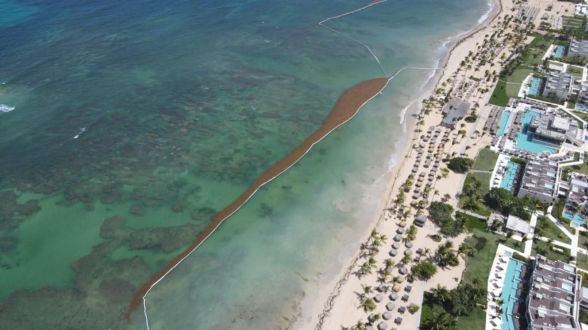
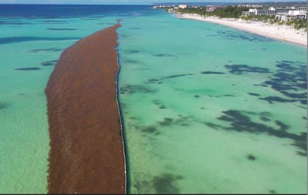
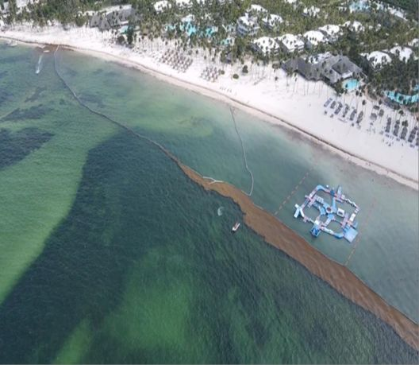
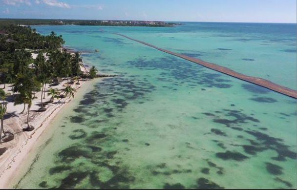
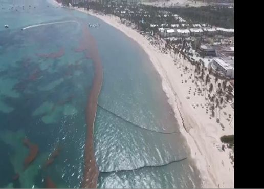

Análisis microbiológicos de agua y alimentos
- Recuento total de bacterias mesófilas
- Coliformes totales y E. coli
- Salmonella, Listeria y Legionella
- Estafilococos, Pseudomonas y Vibrios
Diseñamos, instalamos y mantenemos barreras antisargazo para hoteles y condominios del Este. Y desde hace más de 20 años analizamos agua, alimentos y emisiones para que su operación cumpla la norma ambiental.

Una barrera flotante anclada al fondo que desvía el sargazo antes de que llegue a la orilla. Pioneros en esta solución en el país, la fabricamos a la medida de cada playa y la mantenemos durante toda la temporada.
Seguimos ajustando los materiales para que la barrera sea más duradera y amigable con el entorno marino.





Metros lineales instalados por zona, según nuestros registros.
API Beach, Aquamarina 1 y 2, Condominio Punta Palmera, Juanillo privado y público, Secrets Cap Cana, Hyatt Cap Cana.
Dreams Punta Cana, Live Aqua, Dreams Onyx, Breathless, Sirenis, Excellence El Carmen, Finest Punta Cana, Codelpa.
Dreams Palm Beach, Be Live Punta Cana, Catalonia Bávaro, Serenade Punta Cana, Dreams Flora, Dolphin Explorer.
Central Romana Corporation.
Meliá Caribe Punta Cana, Palma Real, Impressive, Whala, Condominio Playa Turquesa, Condominio Costa Atlántica.
En Juanillo, Cap Cana, medimos picos de 4 m³ de sargazo por metro lineal al día en mayo y junio de 2021. Dimensionamos cada barrera con datos como estos.
Cuéntenos el largo de su playa y le enviamos una propuesta.
Cotizar por WhatsAppAyudamos a hoteles, restaurantes e industrias de alimentos, textiles y alcohol a cumplir las normas ambientales y de inocuidad alimentaria. El Ministerio de Medio Ambiente y Recursos Naturales nos utiliza como laboratorio externo.
Respondemos por WhatsApp, teléfono o correo.